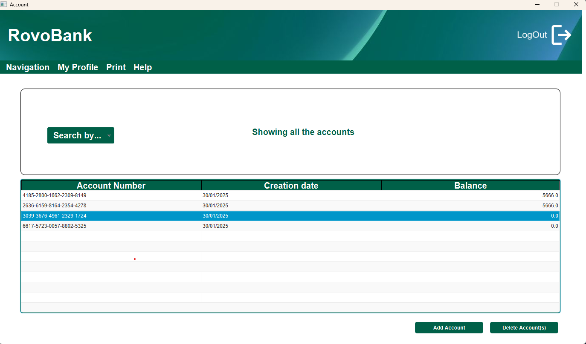
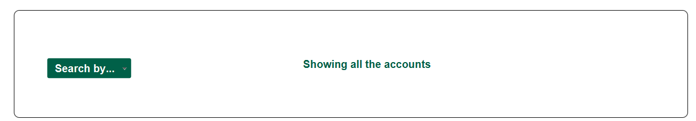
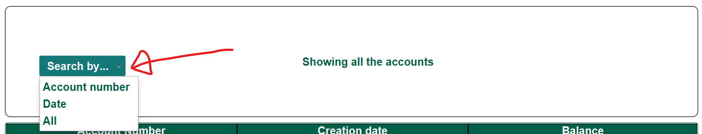
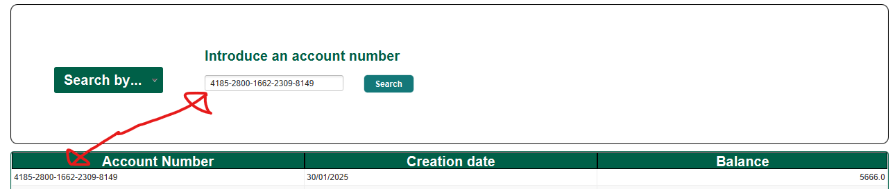
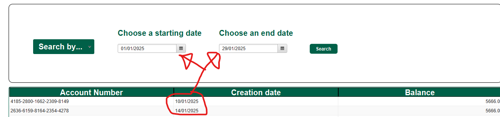
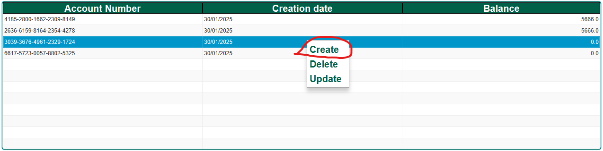
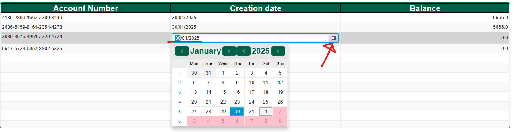
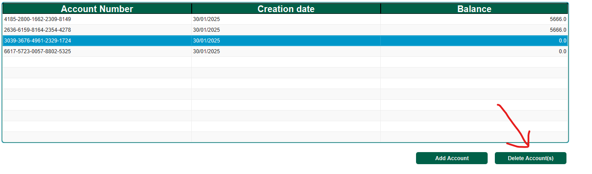
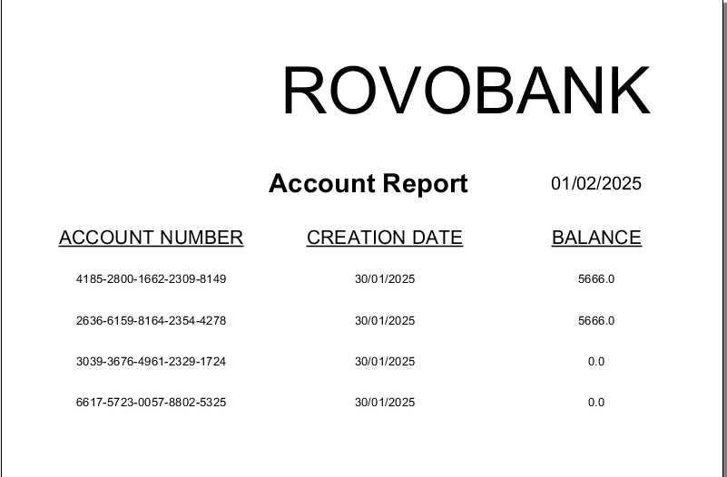

Account View: Help
General description
This windows purpose is to manage the accounts of RovoBank's customers. It will show you all accounts or filtered based on different criteria. You can also create new accounts, modify their data or delete them.
Search Operations
The middle section of the application contains a searcher that can also be use as a filter to search for specific account(s). There are 3 possible search that can be done. The type of search that can be done is chosen from any of the items inside the drop down Search by... and clicking on one of the type of search.
 Search by account numberIntroduce the account you want to search for in the box. This will enable the button Search. Pressing the button will show if there is any accounts in the RovoBank database that matches. Should no accounts exist with that number or and incorrect format was introduced in the box and error Alert will the shown on screen. It is important to notice that the introduced number needs to have the following format: XXXX-XXXX-XXXX-XXXX-XXXX
 Search account number by datesIntroduce a starting date and ending date. It will make available the search button. After which by pressing it it will search and show the accounts that where created between the chosen dates. If the dates do not have the right format or no account was created between then and error alert will be shown
 Show all accounts in the databaseAs the name implies this last option will show all the accounts that are in the database. It is also the predefine option when entering the Account window.
Table Operations
Create a new AccountThere are two ways to create and account. Either by pressing the button Add accounts located at the bottom right

or by pressing Create in the contextual menu. The contextual menu can be accessed by pressing the right button on the mouse while having the pointer on top of the table.
It is important to notice that all created accounts already comes with default data. Should there be an error in the creation of the account an alert will pop up with the reason for the error
Modify accounts dataTo modify the data on the table you can do so by double clicking in the cell containing the information that you want to update. For security reasons Bank accounts number CANNOT be modified. The date of the creation can be modified either by entering the date manually using the format "dd/MM/yyyy" or by pressing the calendar button and choosing a valid date
The same method if use when changing the balance
Delete AccountsTo delete and account it is mandatory to have an account or accounts selected, Otherwise the options for deleting accounts will not be available. To delete account first click on an account in the table and then press the button Delete Account(s) that is located at the bottom right corner, next to the Add Account button.
It is possible to delete multiple accounts in one go by selecting multiple rows before pressing a button. Selection of multiple rows can be done by clicking on multiple rows while having press the keyboard key CTRL or by clicking on 2 different accounts while having the keyboard key SHIFT pressed. Which in that case all the accounts between the 2 selected accounts will also be selected. Same as with create account you can use the same contextual menu but clicking on Delete to erase the selected account(s).
Print the accounts reportPressing the keyboard key F6 will open a new window where you can see a document containing a list of all the accounts of RovoBank
It is possible to save the report by using the button located at the top of the report window.
Exiting the applicationPressing the X at the top right most corner will prompt a message confirming your intention of leaving the application. Click on yes will close the application.
HelpPressing the keyboard key F1 will show you this help